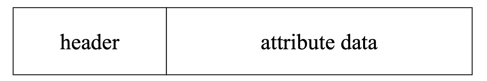
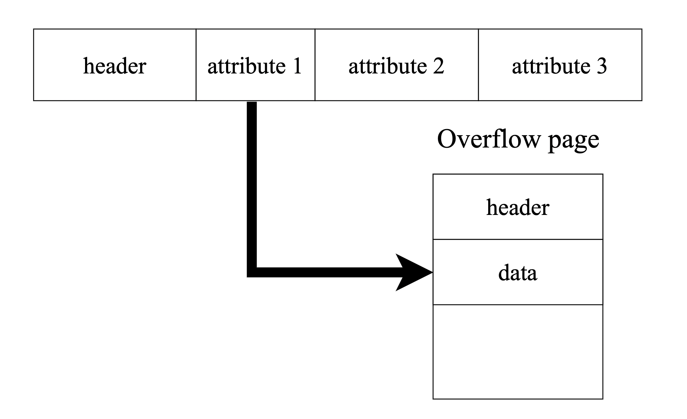
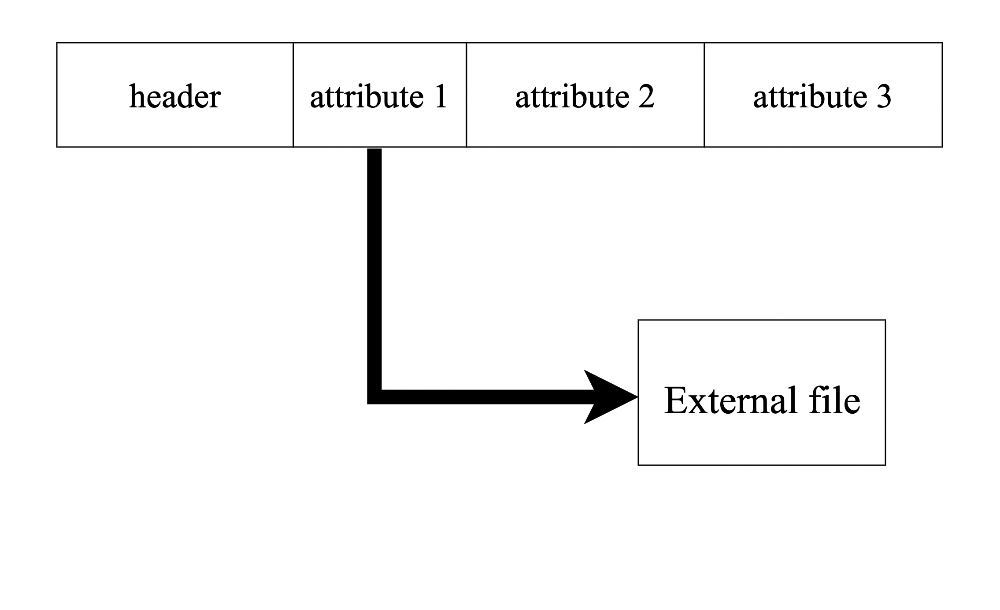
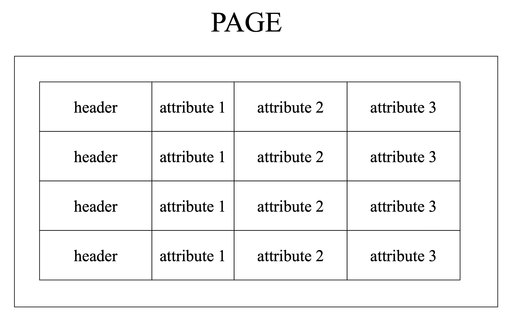

Системные каталоги СУБД содержат информацию о схеме таблиц, которую система использует для определения типов атрибутов кортежа.
Имеет заголовок с метаданными:
1. Метаданные о транзацкии (Transaction visibility).
2. Битовая маска для значений NULL.

Integers
Большинство СУБД хранят целые числа, используя свои «родные» типы C/C++, как указано в стандарте IEEE-754. Эти значения имеют фиксированную длину.
https://en.wikipedia.org/wiki/IEEE_754
Примеры: INTEGER, BIGINT, SMALLINT, TINYINT.
Variable Precision Numbers
Числа с плавающей точкой, использующий «собственные» типы C/C++, указанные в стандарте IEEE-754. Эти значения имеют фиксированную длину.
Числа с плавающей точкой вычисляются быстрее, чем числа с произвольной точностью, потому что ЦП может напрямую выполнять над ними инструкции.
https://en.wikipedia.org/wiki/IEEE_754
Примеры: FLOAT, DOUBLE/REAL.
Fixed Precision Numbers
Это числовые типы данных с произвольной точностью и масштабом. Обычно они хранятся в точном двоичном представлении переменной длины
с дополнительными метаданными (scale, precision), которые сообщают системе, например, где должен быть десятичный разряд.
Эти типы данных используются, когда ошибки округления недопустимы, но СУБД платит за производительность, чтобы получить такую точность.
Примеры: NUMERIC, DECIMAL.
Fixed Length Data
Массив байтов фиксированной длины.
Если значение занимает меньше чем длина, свободное место не используется.
Примеры: CHAR.
Variable Length Data
Массив байтов произвольной длины.
Имеет заголовок, который отслеживает длину строки, чтобы упростить переход к следующему значению.
Большинство СУБД не допускают, чтобы размер кортежа превышал размер одной страницы, поэтому они решают эту проблему путем
записи значения на странице переполнения (overflow page) и содержание в кортеже ссылки на значение в этой странице
Примеры: VARCHAR, VARBINARY, TEXT.
Variable Length Data
Большинство СУБД не допускают, чтобы размер кортежа превышал размер одной страницы, поэтому они решают эту проблему путем
записи значения на странице переполнения (overflow page) и содержание в кортеже ссылки на значение в этой странице
Postgres: TOAST (>1/4 size of page 2KB)
MySQL: Overflow (>1⁄2 size of page)
Variable Length Data

External Value Data
Некоторые системы позволяют хранить эти большие значения во внешнем файле, и тогда кортеж будет содержать указатель на этот файл. Один
недостатком этого является то, что СУБД не может манипулировать содержимым этого файла.
Нет поддержки транзакционности
Примеры: BLOB.
External Vength Data

Dates and Times
Обычно они представлены как количество (микро/милли) секунд с эпохи UNIX (UNIX timestamp).
Примеры: TIME, DATE, TIMESTAMP.
Additional types
Многие СУБД вводят дополнительные типы.
1. ENUM
2. Массивы
3. Геометрические типы (POINT, POLYGON)
4. Составные типы
5. JSON/XML
6. Range
System catalog
СУБД хранит метаданные о базах данных, в своих системных каталоги.
Большинство СУБД хранят метаданные в специальных системных таблицах.
System catalog
В реляционных базах данных информационная схема (information_schema) представляет собой набор представлений,
доступных только для чтения, в соответствии со стандартом ANSI,
которые предоставляют информацию обо всех таблицах, представлениях, столбцах и процедурах в базе данных.
https://en.wikipedia.org/wiki/Information_schema
System catalog
Большинство СУБД предоставляют дополнительную информацию с использованием нестандартных команд
MySQL - SHOW
Oracle - DESCRIBE
psql (Postgres default command-line program) - \d
Workloads
Реляционная модель не указывает, что мы должны хранить все атрибуты кортежа вместе на одной странице.
На самом деле это может быть не лучший способ хранения для некоторых видов нагрузок.
OLTP
OLTP - On-line Transaction Processing
Простые запросы, которые читают/обновляют небольшой количество данных, относящихся к одному объекту в базе данных.
СУБД может хранить кортежи различными способами, которые лучше подходят для рабочих нагрузок OLTP или OLAP.
До сих пор в этом семестре мы использовали n-арную модель хранения (также известную как «хранилище строк»).
N-ary storage model (NSM)
Row store
СУБД хранит все атрибуты одного кортежа последовательно на странице.
Идеально подходит для рабочих нагрузок OLTP, когда запросы, как правило, работают только с отдельными объектами, а вставки — с большими рабочими нагрузками.
N-ary storage model (NSM)

N-ary storage model (NSM)
Примеры систем: MySQL, PostgreSQL, Oracle.
Преимущества:
1. Быстрая вставка, обновление и удаление.
2. Подходит для запросов, которым нужен весь кортеж.
Недостатки:
1. Не подходит для сканирования больших частей таблицы и/или подмножества атрибутов.
Decomposition storage model (DSM)
Column store
СУБД хранит значения одного атрибута для всех кортежей последовательно на странице.
Идеально подходит для рабочих нагрузок OLAP, когда запросы только для чтения выполняют большое сканирование подмножества атрибутов таблицы.